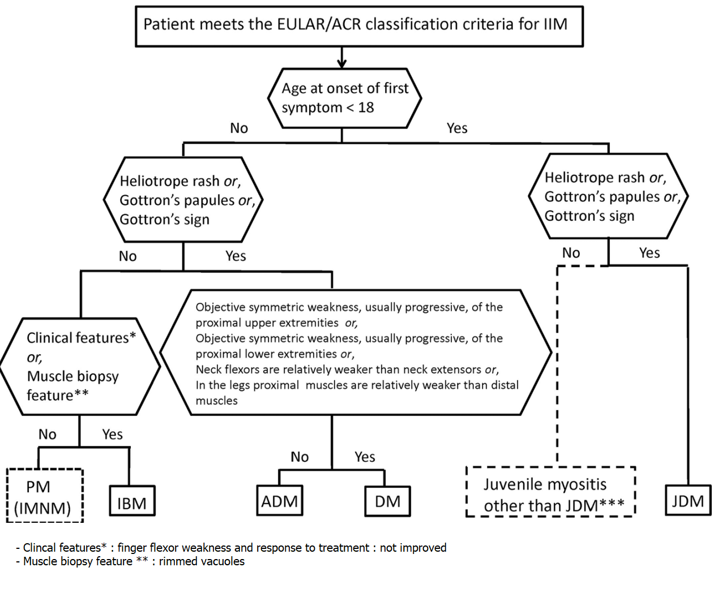

Idiopathic Inflammatory Myositis
골격근을 침범하여 근육의 염증과 근력저하를 초래하는 원인 불명의 전신 자가면역질환
** PM (1863) -> DM (1891) -> IBM (1971)
1. 역학 및 발병 인자
1-1. 역학
- 발병률 : 100만 명 당 2.18~7.7명
- 유병률 : 10만 명 당 10~20명
- Bimordial (<15, 45~54), 남:여 = 1:1.5, malignancy는 DM에서 더 호발하고 남성/연하곤란이 있을 때 암 발병 위험이 높음.
1-2. 분류 (2003, Amato)
- Polymyositis
- Dermatomyositis
- Inclusion-body myositis
- Immune-mediated necrotizing myositis
- 비특이적 근염
2. 병인기전
유전 + 환경 + 면역
3. 임상증상
3-1. 전신증상 & 근골격증상
- 피로감, 발열, 체중감소
- Symmetrical, proximal muscle weakness : subacute
- 안구근육은 거의 침범하지 않음.
3-2. 관절 외 증상
- skin : heliotrope rash, scaly eruption, Gottron’s papule, V sign, shawl sign, mechanic’s hand (antisynthetase syndrome)
- calcification
- synovitis
- Lung : ILD
- Heart : conduction abnormality, arrythmia
- GI tract : dysphasia, aspiration pneumonia, GERD, PBC, Sclerosing cholangitis
- RP, Malignancy (ovarian ca., breast ca., melanoma, colon ca., NHL) : ESR 높고, 표피 괴사, 피부 혈관염을 보일 때
4. 검사소견과 진단
4-1. 혈액검사
- Muscle enzyme : CK, AST, ALT, LDH, Aldolase
- 자가항체 : ANA, Anti-Jo, Anti-U1RNP (MSA, MAA)
4-2. 근전도 검사
- 일반적으로 비특이적 (Insertional activity 증가, positive sharp waves, fibrilation potentials)
4-3. 조직검사
- 근육생검
- 피부생검 : 피부 소견이 우세하지만 전형적이지 않은 경우
4-4. 영상검사 & 기타
- X-ray, MSUS, CT
- MRI : Bx. site 결정, 다른 검사 결과가 정상일 때 질환 악화를 확인할 때, 다른 질환과 감별할 때
- PFT, PET-CT, EGD/CFS, NFC
4-5. 분류기준
2017 EULAR/ACR classification criteria
| ACR/EULAR classification
criteria for adult and juvenile idiopathic inflammatory
myopathies: When no better explanation for the symptoms and signs exists, these classification criteria can be used |
|||
|---|---|---|---|
| Variable | without muscle biopsy | with muscle biopsy | Definition |
| Age of onset | |||
| Age of onset of first symptom assumed to be related to the disease ≥18 years and <40 years | 1.3 | 1.5 | 18 ≤ age (years) at onset of first symptom assumed to be related to the disease <40 |
| Age of onset of first symptom assumed to be related to the disease ≥40 years | 2.1 | 2.2 | Age (years) at onset of first symptom assumed to be related to the disease ≥40 |
| Muscle weakness | |||
| Objective symmetric weakness, usually progressive, of the proximal upper extremities | 0.7 | 0.7 | Weakness of proximal upper extremities as defined by manual muscle testing or other objective strength testing, which is present on both sides and is usually progressive over time |
| Objective symmetric weakness, usually progressive, of the proximal lower extremities | 0.8 | 0.5 | Weakness of proximal lower extremities as defined by manual muscle testing or other objective strength testing, which is present on both sides and is usually progressive over time |
| Neck flexors are relatively weaker than neck extensors | 1.9 | 1.6 | Muscle grades for neck flexors are relatively lower than neck extensors as defined by manual muscle testing or other objective strength testing |
| In the legs, proximal muscles are relatively weaker than distal muscles | 0.9 | 1.2 | Muscle grades for proximal muscles in the legs are relatively lower than distal muscles in the legs as defined by manual muscle testing or other objective strength testing |
| Skin manifestations | |||
| Heliotrope rash | 3.1 | 3.2 | Purple, lilac-colored, or erythematous patches over the eyelids or in a periorbital distribution, often associated with periorbital edema |
| Gottron’s papules | 2.1 | 2.7 | Erythematous to violaceous papules over the extensor surfaces of joints, which are sometimes scaly. May occur over the finger joints, elbows, knees, malleoli, and toes |
| Gottron’s sign | 3.3 | 3.7 | Erythematous to violaceous macules over the extensor surfaces of joints, which are not palpable |
| Other clinical manifestations | |||
| Dysphagia or esophageal dysmotility | 0.7 | 0.6 | Difficulty in swallowing or objective evidence of abnormal motility of the esophagus |
| Laboratory measurements | |||
| Anti–Jo-1 (anti–histidyl–transfer RNA synthetase) autoantibody present | 3.9 | 3.8 | Autoantibody testing in serum performed with standardized and validated test, showing positive result |
| Elevated serum levels of creatine kinase (CK) or lactate dehydrogenase (LDH) or aspartate aminotransferase (ASAT/AST/SGOT) or alanine aminotransferase (ALAT/ALT/SGPT) (Serum levels above the upper limit of normal) | 1.3 | 1.4 | The most abnormal test values during the disease course (highest absolute level of enzyme) above the relevant upper limit of normal |
| Muscle biopsy features—presence of: | |||
| Endomysial infiltration of mononuclear cells surrounding, but not invading, myofibers | 1.7 | Muscle biopsy reveals endomysial mononuclear cells abutting the sarcolemma of otherwise healthy, non-necrotic muscle fibers, but there is no clear invasion of the muscle fibers | |
| Perimysial and/or perivascular infiltration of mononuclear cells | 1.2 | Mononuclear cells are located in the perimysium and/or located around blood vessels (in either perimysial or endomysial vessels) | |
| Perifascicular atrophy | 1.9 | Muscle biopsy reveals several rows of muscle fibers, which are smaller in the perifascicular region than fibers more centrally located | |
| Rimmed vacuoles | 3.1 | Rimmed vacuoles are bluish by hematoxylin and eosin staining and reddish by modified Gomori trichrome stain | |
| Probable IIM : score of ≥ 5.5 without biopsies; ≥6.7 with biopsies Definite IIM : score of ≥ 7.5 without biopsies; ≥ 8.7 with biopsies | |||
| 성인 및 청소년 특발성 염증성 근병증에 대한 ACR/EULAR 분류 기준: 증상 및 징후에 대한 더 나은 설명이 없을 때 이러한 분류 기준을 사용할 수 있다. |
|||
|---|---|---|---|
| 변수 | 근육조직검사가 없는 경우 | 근육조직검사가 있는 경우 | 정의 |
| 첫 발생 연령 | |||
| 질병과 관련된 것으로 추정되는 첫 번째 증상의 발병 연령이 18세 이상 40세 미만 | 1.3 | 1.5 | 18 ≤ 질병과 관련된 것으로 추정되는 첫 번째 증상의 발병 연령 ＜ 40 |
| 질병과 관련된 것으로 추정되는 첫 번째 증상의 발병 연령이 40세 이상 | 2.1 | 2.2 | 질병과 관련된 것으로 추정되는 첫 번째 증상의 발병 연령 ≥40 |
| 근력 약화 | |||
| 상지 근위부 근육의 객관적이고 대칭적인 약화, 대개 진행성 | 0.7 | 0.7 | 상지 근위부 근육의 약화는 도수근력평가 (manual muscle testing) 또는 다른 객관적인 근력 검사로 결정되며, 양쪽에 나타나고 시간이 지남에 따라 점진적으로 나타남 |
| 하지 근위부 근육의 객관적이고 대칭적인 약화, 대개 진행성 | 0.8 | 0.5 | 하지 근위부 근육의 약화는 도수근력평가 (manual muscle testing) 또는 다른 객관적인 근력 검사로 결정되며, 양쪽에 나타나고 시간이 지남에 따라 점진적으로 나타남 |
| 목 굽힘근이 목 폄근보다 상대적으로 약함 | 1.9 | 1.6 | 목 굽힘금의 근 등급이 목 폄근보다 상대적으로 약하다는 것은 도수근력평가 (manual muscle testing) 또는 다른 객관적인 근력 검사로 결정됨 |
| 다리에서, 근위부 근육이 원위부 근육보다 상대적으로 약함 | 0.9 | 1.2 | 다리 근위부 근육의 근 등급이 다리 원위부 근육보다 상대적으로 약하다는 것은 도수근력평가 (manual muscle testing) 또는 다른 객관적인 근력 검사로 결정됨 |
| 피부 증상 | |||
| 연보라발진 (Heliotrope rash) | 3.1 | 3.2 | 자주색, 라일락색, 또는 홍색의 반점이 눈꺼풀 또는 눈 주변에 분포하며, 대개 눈 주변 부종이 동반됨 |
| 고트론 구진 (Gottron’s papules) | 2.1 | 2.7 | 홍반 내지 연보라색의 (경계가 뚜렷하고 융기된) 구진이 관절의 펴는쪽 표면에 분포해 있는 것으로, 때로 비늘이 있기도 함. 손가락, 팔꿈치, 무릎, 복숭아뼈 및 발가락 관절에 발생할 수 있음 |
| 고트론 징후 (Gottron’s sign) | 3.3 | 3.7 | 홍반 내지 연보라색의 (1cm 미만의) 반점이 관절의 펴는쪽 표면에 분포해 있는 것으로, (융기되지 않아서) 만져지지 않음 |
| 다른 임상 증상 | |||
| 삼킴 장애 또는 식도운동 이상 | 0.7 | 0.6 | 삼킴에 어려움이 있거나 또는 식도의 식도운동 이상의 객관적인 근거 |
| 검사실 결과 | |||
| 항 Jo-1 (anti–histidyl–transfer RNA synthetase) 항체 양성 | 3.9 | 3.8 | 혈청 내 자가항체 검사를 표준화되고 검증된 검사로 수행하여 양성 결과를 나타냄 |
| CK 또는 LDH 또는 AST(ASAT/SGOT) 또는 ALT(ALAT/SGPT)의 혈청 농도 상승(정상 상한선을 초과하는 혈청 수준) | 1.3 | 1.4 | 질병 경과 중 가장 비정상적인 검사 값(효소의 절대값 중 최고치)이 정상 상한치를 초과함 |
| 근육조직검사: | |||
| 내근막 (Endomysium)에 단핵세포가 침착되나, 근섬유(myofiber)에는 침착되지 않음 | 1.7 | 근육조직검사 결과상 건강한 비-괴사 (non-necrotic) 근육 섬유의 sarcolemma에 인접한 근내막 단핵 세포 (endomysial mononuclear cell) 가 보이지만, 이 단핵 세포가 근육섬유에는 침범하지 않음. | |
| 주위근막(Perimysial) 또는 혈관 주변(perivascular)에 단핵세포 침착 | 1.2 | 단핵구가 주위근막(perimysium)이나 혈관 주변에 분포 (주위근막 또는 내근막 혈관) | |
| 근육다발주위 위축(Perifascicular atrophy) | 1.9 | 근육조직검사 결과상 일련의 근섬유가 확인되는데, 이것은 중심부에 위치한 근섬유보다 근육다발주변부에 있는 근섬유가 더 작음 | |
| 테두리 액포(Rimmed vacuoles) | 3.1 | 테두리 액포(Rimmed vacuoles)는 H&E 염색에서 푸르게 보이고 변형 고모리 트리크롬(modified Gomori trichrome) 염색에서는 붉게 보임 | |
| 개연성이 있는 (probable) IIM : [근육조직검사가 없을 때 ≥ 5.5][근육조직검사가 있을 때 ≥6.7] 확실한 (Definite) IIM : [근육조직검사가 없을 때 ≥ 7.5][근육조직검사가 있을 때 ≥8.7] | |||

2011 ENMC classification criteria for IBM
1975 Bohan & Peter classification criteria
| Bohan and Peter criteria for the diagnosis of PM and DM (1975) | |
|---|---|
| Criteria | Definition |
| A | Proximal and symmetrical muscle weakenss of the pelvic and scapular girdle, anterior flexors of the neck, progressing for weeks to months, with or without dysphagia or involvement of respiratory muscles |
| B | Elevation of the serum levels of skeletal muscle enzymes: creatine kinase, aspartate aminotrasnferase, lactate dehydrogenase and aldolase |
| C | Electromyography characteristic of myopathy (short and small motor units, fibrillation, positive pointy waves, insertional irritability and repetitive high-frequency firing) |
| D | Muscle biopsy showing necrosis, phagocytosis, regeneration, perifascicular atrophy, perivascular inflamnmatory exudate |
| E | Typical cutaneous changes: [1] Heliotrope rash with periorbital oedema and violaceous erythema [2] Gottron's sign : vasculitis in the elbow, metacarpophalangeal and proximal interphalangeal joints |
| Polymyositis | [1] Definite - all of A-D [2] Probable - any three of A-D [3] Possible - any two of A-D |
| Dermatomyositis | [1] Definite - E plus three of A-D [2] Probable - E plus two of A-D [3] Possible - E plus one of A-D |
| 염증근염과 피부근염 진단을 위한 Bohan과 Peter 기준 (1975) | |
|---|---|
| 항목 | 정의 |
| A | 근위부 그리고 대칭적인 골반 및 견갑대, 목의 전방 굴곡근의 위약, 수주에서 수 개월간 진행되며, 삼킴곤란이나 호흡근 침범이 동반되기도 함. |
| B | 혈청 골격근 효소 수치 상승: CK, AST, LDH, 그리고 aldolase |
| C | 근병증의 근전도 검사 특징(짧고 작은 운동 단위, 세동, 뾰족한 양의 파동, 삽입 과민성 및 반복적인 고주파 발화) |
| D | 근육조직검사상 괴사, 식균작용, 재생, 근막주위 위축, 혈관주위 염증성 삼출물 |
| E | 전형적인 피부 변화: [1] 연보라발진(Heliotrope rash) - 안와주위 부종 및 보랏빛 홍반 동반 [2] 고트론 징후(Gottron's sign) - 팔꿈치, MCP, PIP 관절의 혈관염 |
| Polymyositis | [1] 확실(Definite) - A-D 모두 [2] 개연성(Probable) - A-D 중 3개 [3] 가능성(Possible) - A-D 중 2개 |
| Dermatomyositis | [1] 확실(Definite) - E(필수) + A-D 중 3개 [2] 개연성(Probable) - E(필수) + A-D중 2개 [3] 가능성(Possible) - E(필수) + A-D중 1개 |
- Bohan-Peter classification criteria (1975)
- ENMC classification criteria (2003)
4-6. 감별진단
- Anemia, Viral infection (EBV, HBV, HCV, HIV, TB, Syphilis, Toxocariasis), etc.
5. 치료원칙
5-1. 요약
- GC : 1mg/kg/d -> MTX 쓰면서 taper -> 5~10mg/d로 유지. 증상 + muscle enzyme 호전 여부로 f/u
- MTX : 10~15mg/week
- AZA, MMF, Prograf 등
- Dermatomyositis : HCQ
6. 경과와 예후
- 치료 받은 PM/DM의 5년 생존율 : 95%, 10년 생존율 : 84%
- Overlap일 경우 경한 근염 양상.
- PM이 DM보다 예후가 좋다. 고령인 경우 질병의 경과가 매우 빠르다.
Last update: November 1, 2021